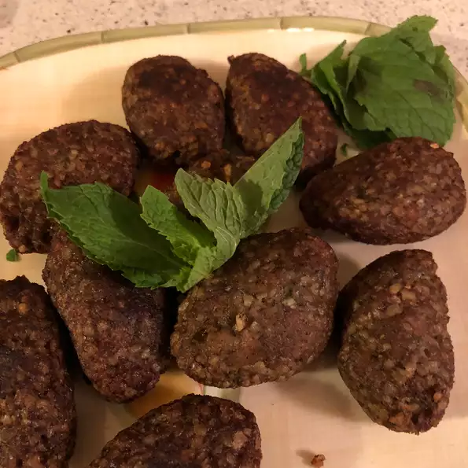
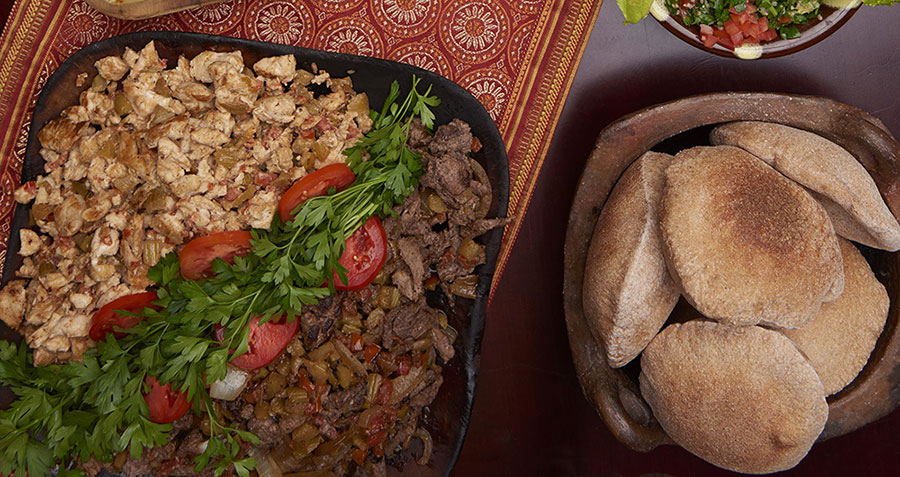
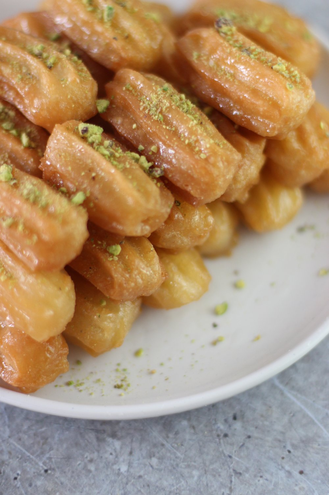
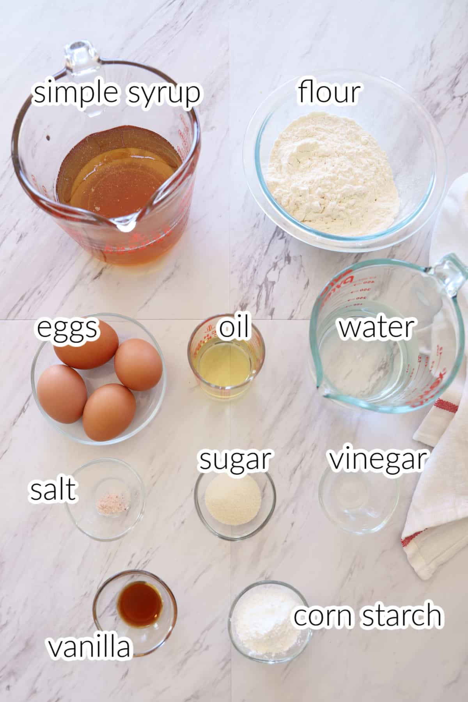

Syrian food recipes
WHAT TO EAT IN SYRIA? 3 Most Popular SYRIAN FOODS
1.Middle Eastern Kibbeh
Cook Time:2hour
These traditional patties are made with ground lamb, cooked bulgur wheat, chopped mint, and onions. "Kibbeh is a wonderful dish from the Middle East traditionally made with lamb meat but beef is acceptable, too," says Ron Shepherd. "I prefer it made into patties and fried in olive oil. However, it is most often found in restaurants in baked form. Serve kibbeh with tahini, a sesame seed paste."
INGREDIENTS:
- ⅔ cup medium coarse bulgur
- 1 cup fresh mint leaves
- 1 large onion, chopped
- 1 teaspoon ground cumin
- 1 teaspoon ground allspice
- 1 teaspoon salt
- ½ teaspoon ground black pepper
- 1½ pounds lean ground lamb⅔ cup medium coarse bulgur
- 3 tablespoons olive oil⅔ cup medium coarse bulgur
2.Syrian Chicken Shawarma
Cook Time: 1 hour & 30 minutes
Today, shawarma is a staple street food in the Middle East. Traditionally served as a sandwich, it has also grown to become a popular dish in the United States. The Saleh family has always been passionate about being ambassadors of their country’s (Lebanese) cuisine, but there were some obstacles in sharing shawarma with restaurant guests in their North Carolina home when Neomonde first opened its doors over 40 years ago.
INGREDIENTS:
- 4 large chicken breasts
- 4 tbsp yogurt
- 22 cardamom
- 2 tbsp curry
- 4 tsp garlic – minced
- 4 tsp paprika
- 3 tbsp cumin
- Salt, to taste
- ½ cup vinegar
- ½ cup olive oil
- 1 lemon – slices
- 1 lemon – juice of
3.Balah el Sham
Cook Time: 30 minutes
Tulumba, also known as Balah El Sham is a delicious fried choux pastry dough with an utterly divine simple syrup. Tulumba is the perfect accompaniment to your afternoon tea or during Ramadan. You'll relish every bite of the crunchy outside and the soft and creamy inside. A dessert plate with tulumba garnished with crushed pistachios.
 | step 1 | step 2 | step 3 | step 4 | step 5 |
| Combine 1 cup water and 1 cup sugar in a saucepan over high heat. Bring to a boil; stir until sugar dissolves. Reduce heat to medium; add lime juice. Simmer until flavors combine, about 10 minutes. Remove from heat. Stir 1 teaspoon vanilla extract into the syrup; let cool. | Stir 2 cups water, 1 cup sugar, vegetable oil, and salt together in a pot over medium-high heat; bring to a boil. Reduce heat to medium. Add flour; stir vigorously with a wooden spoon until batter forms into a ball. Cook until batter is shiny, about 1 minute. Transfer to a bowl; allow to cool, about 5 minutes. | Flatten batter into the bottom of the bowl. Add eggs, 1 at a time, mixing well after each addition. Stir in remaining 1 teaspoon vanilla extract; mix until batter is creamy. Pour into a cloth piping bag fitted with a large star tip. | Heat corn oil in a deep saucepan over medium heat until bubbly; reduce heat to medium-low. Squeeze 2 inches of batter onto an oiled spatula and lower into the hot oil; repeat until saucepan is full. Cook, turning occasionally, until golden brown, about 5 minutes. Transfer pastries to a paper bag to drain, about 30 seconds. | Soak hot pastries in syrup; transfer to a plate to cool, about 5 minutes. |